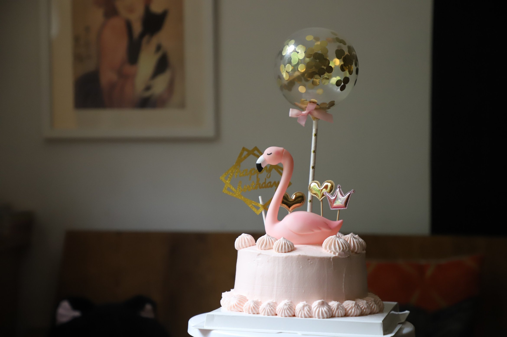
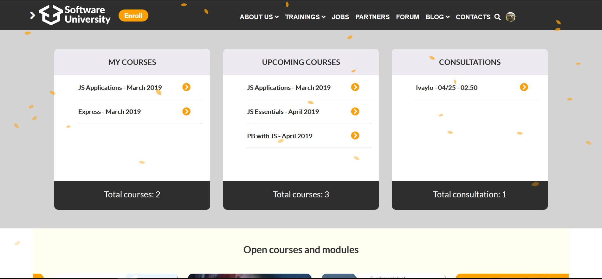

Portfolio
Some of my recent work

Web Development and Web Design
Blog Website - Foonzy
A Blog/Website dedicated to cakes and sweets for my final exam where I got first place. The purpose was to make semantic html, use the - SCSS preprocesor, animations, Jekyll, Gulp.
Go To WebsiteWeb Design
Layout
A dark themed rework on the landing page of my university. It uses slick.js, notify.js, jQuery DateTimePicker and jQuery Sakura Animation.
Go To Website


Web Development
Typewriter Script
A typing effect using Vanilla JS + CSS + HTML. Easy to include in your own projects!
Go To Website